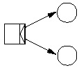
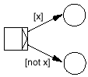
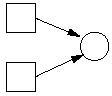

-
And-split
-

A case of parallel routing, where several tasks are performed
in parallel or in no particular order. It is modeled by a transition
with one input place and two or more output places.
-
And-join
-

A transition with two or more input places and one output place. This
will only be enabled, once there is a token in all of the input
places, which would be after each parallel thread of execution has
finished.
-
Arc
-
Arcs are the arrows that connect transitions and places. They always go
either from a place to a transition (thus defining an input place for
that transition), or from a transition to a place (thus defining an
output place for the transition).
-
Case Attribute
-
Correspond to "for-internal-use-only" fields on the forms. They're
filled out as part of a transition, and can be used to branch on in
or-splits.
-
Enabled Transition
-
An enabled transition is a transition for which there is at least one
token in each of its input places. In the office metaphor this is
the same as saying that all the forms necessary to complete a certain
task are present.
-
Explicit Or-split
-

An example of conditional routing, where the decision is made as
early as possible. It is modeled by attaching conditions or
guards the arcs going out of a transition.
-
Firing a Transition
-
When a transition fires, it consumes one token from each of its
input places and produces one token in each of its output
places, for which the guard evaluates to true. Thus that a
transition is enabled is a necessary condition for the transition to
fire. In the office metaphor, this corresponds to taking each of the
forms in the in-boxes, perform the task, and put a form in each of the
in-boxes of the next task to be performed. We'll just photocopy or
discard forms as necessary to make the numbers fit.
-
Guard
-
An expression attached to an arc, shown in brackets, that evaluates to
true or false. Tokens can only travel over arcs when their guard
evaluates to true. The expression will typically involve the case
attributes.
-
Implicit Or-Split
-

An example of conditional routing, where the decision is made
as late as possible. Implicit or-splits are modeled as two arcs
going from the same place but to different tasks. That way, the
transition that happens to fire first will get the token. Once the
token is gone, the others are no longer enabled and thus cannot fire.
-
Or-join (Explicit and Implicit)
-

Is simply a place, that serves as the output place of two different
transitions. That way, the next transition after the or-join place
will be enabled when either of the two conditional threads are
done.
-
Place
-
Places are the in-boxes of the office. They're represented as circles on the
diagram. Places hold Tokens.
-
Place (Start and End Places)
-
There are two special places. When the workflow starts, a token is put
in the start place, which should enable at least transition. The end
place is a place which does not serve as the input place for any
transitions. When the token lands in this place, the case is
closed.
-
Task
-
Used as a synonym for an enabled transition. In practice, though,
people often use the word task as a synonym for transition as well.
-
Token
-
A token is the form representing a case. Tokens stay in Places.
-
Transition
-
A transition represents a task (or a desk) in the office
metaphor. They correspond to activity. They move tokens from one or
more places to one or more other places governed by certain rules.
-
Transition Trigger
-
A transition need not fire the instant it is enabled. If the task is
something that has to be done by a human being, she might not be
able, available or willing to perform the task. In general there are
four types of triggers:
- User: The transition must be executed by some
person. Instances of these transitions (the transition for a specific
case) is also referred to as tasks.
- Time: The transition is fired automatically at some
specific time, typically after the transition has been enabled for a
certain number of days. An example is when we mail a form to a
customer and we wait for a response. We could then add a transition that
automatically closes the case if we haven't heard back from the
customer in three weeks.
- Message: Some tasks need to be executed by something
outside the control of the workflow application. An example of that is
when we mail a form the some person and asks him to fill it out. The
way the workflow package learns that the task has been executed is
through a message of some form.
- Automatic: The workflow engine automatically fires the
transition as soon as it becomes enabled. These can be used to build
control structures like and-splits, and-joins, or-splits and
or-joins. Or they can be used for their side-effects, such as
executing some code.
- Workflow
- A workflow is the formal definition of the process used to manage
a certain case. The example of an insurance claim was given
above. More examples of workflows are: